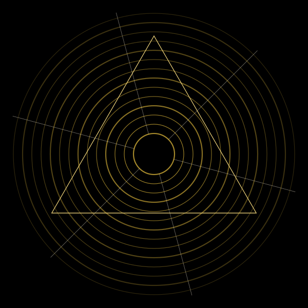
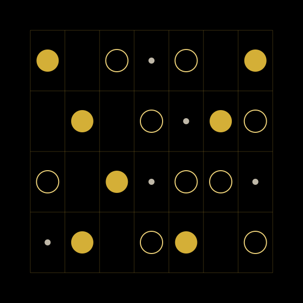
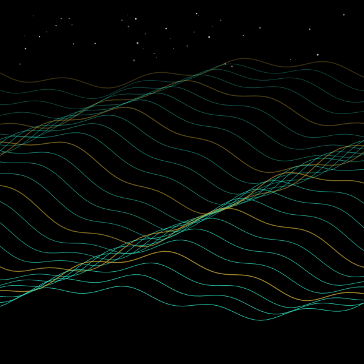
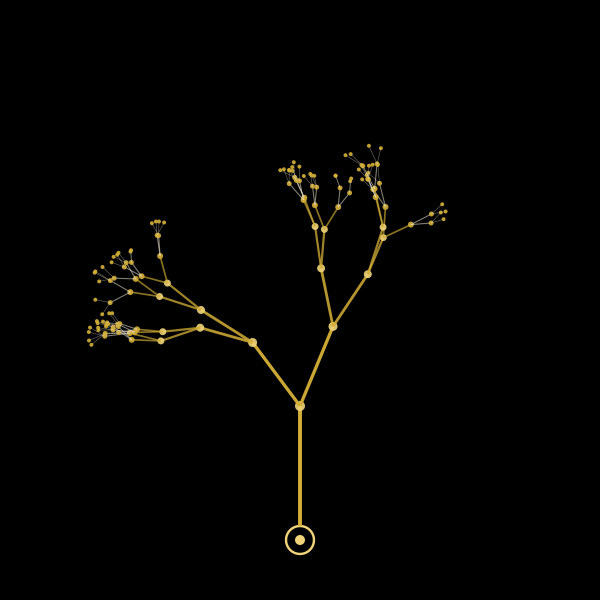

The wall
Gallery
Visual work from the house. Six studies drawn in the emblem's language of rings, lines and gold on black, the portrait, and the mark itself.







About the studies. The six studies were drawn in code for this build so the wall isn't empty while the house is being reviewed. They hold the places where Graham's own visual work will hang; replace any file in assets/img/gallery/ and the wall updates.
Gold line on true black. Rings for what returns, lines for what travels, the triangle for what points somewhere. Colour is spent in one place at a time.
The same language runs through the music pages, the store and the identities built in the studio. Work that comes to the wall doesn't have to speak it, but the wall will always be hung in it.